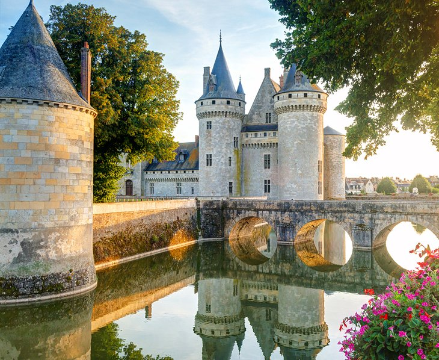

Europe
Explore the charm of Europe with these captivating destinations:
France
Paris, France: The City of Romance and Culture

The capital city of France is known as the "City of Love" and offers a plethora of attractions. The iconic Eiffel Tower, the historic Louvre Museum, and the beautiful Notre-Dame Cathedral are just a few of the must-visit places in Paris. Paris is a city of timeless beauty and elegance, where historic architecture mingles with modern art and fashion. The Seine River winds through the heart of the city, accentuating its charm. Paris is known for its iconic landmarks, including the Eiffel Tower, the Louvre Museum, and Notre-Dame Cathedral, all set against a backdrop of charming cafes and tree-lined boulevards.
Castles of the Loire Valley

Traveling through the Loire Valley gives the impression of stepping into a children's storybook. Turreted fairy-tale castles grace a luxuriant countryside of dense woodlands and gently flowing rivers. The entire Loire Valley, an area known as the "Garden of France," is listed as a UNESCO World Heritage Site. Some of the Loire castles are medieval fortresses built on hilltops and surrounded by ramparts. However, the most famous Loire châteaux are sumptuous Renaissance palaces that were designed purely for enjoyment and entertainment, as an extension of court life outside of Paris.
Cathédrale Notre-Dame de Chartres

For more than eight centuries, the magnificence of Chartres Cathedral has inspired the faithful, and some say this sublime sanctuary has restored belief in the doubtful. The UNESCO-listed Chartres Cathedral is a marvel of Gothic architecture, renowned for its 12th- and 13th-century stained-glass windows. Covering 2,500 square meters, the brilliant windows allow colorful light to filter into the vast nave, creating an ethereal effect. The intricately detailed windows reveal the incredible craftsmanship in depicting biblical stories.
United Kingdom
Tower Bridge, London
Tower Bridge, one of the top tourist attractions in the UK, is a movable bridge, built on River Thames in between the Greater London boroughs and Tower Hamlets and Southwark. The astounding monumental structure of the bridge with the mechanism of dissociation the same attracts tourists from all over the world.
London Eye

Millennium Wheel or London Eye is a revolving observation wheel and is considered a popular tourist attraction in the country. Built on the South Bank of River Thames, this structure is the world's tallest Ferris wheel, with a height of 443 feet and a diameter of 394 feet. The original owners of the London Eye were British Airways, Tussauds Group, and Marks Barfield.
Big Ben, London

Big Ben is a clock tower located next to Westminster Abbey in the heart of London. This tower's historical value is a fundamental reason it is a must-see attraction during a visit to London. Initially, Edmund Beckett Denison designed this clock in collaboration with clockmaker Edward Dent. The gigantic and marvellous structure makes it one of the most-visited places in London.
Italy
Vatican City: Basilica of St. Peter, Sistine Chapel & Vatican Museums

The Vatican is home to some of the world's most priceless art and art collections. The centerpiece is the great Basilica of St. Peter, with the tomb of St. Peter and one of Michelangelo's most poignant works, the Pieta. Outside is St. Peter's Square, where the Pope addresses followers. Because Vatican City has so many places to visit, you could easily spend a day or more here.
Colosseum, Rome

This huge amphitheater, the largest of its kind ever built by the Roman Empire and the largest of their constructions to survive, remained a model for sports facilities right up to modern times. Built by Vespasian in 72 CE and enlarged by the addition of a fourth story by his son, Titus, the Colosseum was a venue for public spectacles and shows - even mock sea battles.
Florence Duomo Santa Maria del Fiore